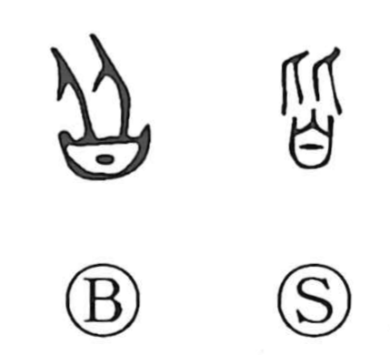

皆

Kun: mina | On: kai
all ・ everyone
Explanation
In the ancient script, 皆 is formed by combining 比, the image of two people standing side by side, with a ritual container into which a written prayer is placed. The graph thus evokes the deities descending in orderly ranks in response to a summons conveyed by that prayer—an act expressed elsewhere by the character 召. From this image of all the gods coming down together, the character came to mean “all, everyone.” When speaking specifically of people acting together, one writes 偕 (“together”), as in the phrase 偕老同穴, “to grow old together and be buried in the same grave.”